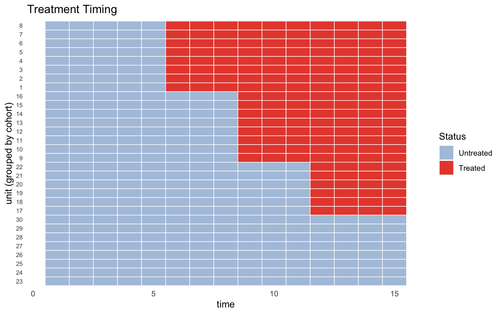
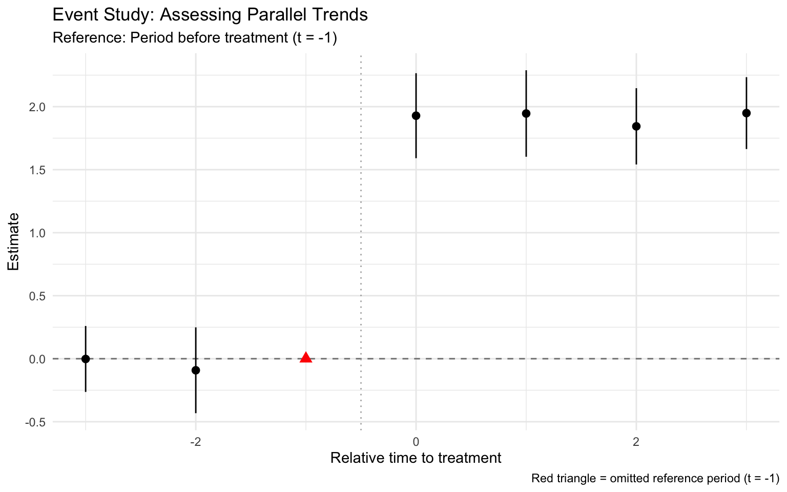
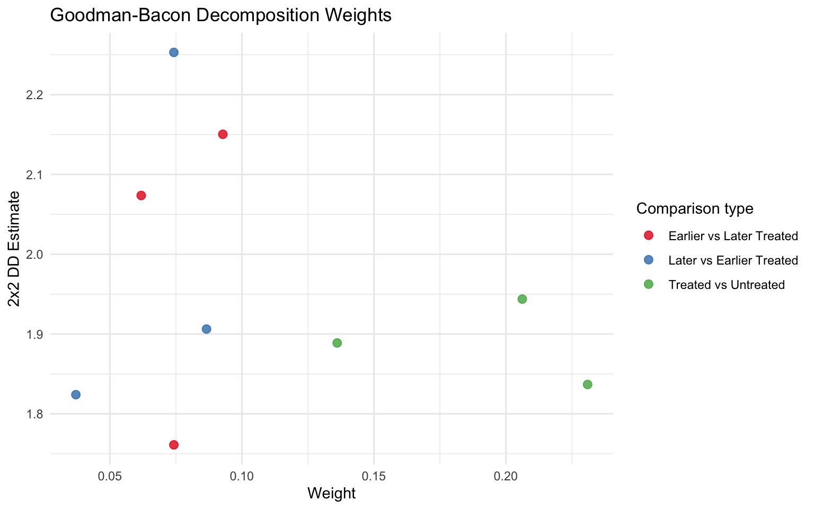

This document provides a comprehensive demonstration of the didhelpers R package. Designed as a lightweight toolkit for staggered Difference-in-Differences (DiD) designs, it allows researchers to easily diagnose, visualize, and summarize their empirical strategies.
Below, we load the package, leverage the built-in dataset, and sequentially apply all four core diagnostic functions.
Setup & Data
First, let’s load the required packages and the sample dataset.
Code
# Load the newly installed packagelibrary(didhelpers)library(ggplot2)# Load the built-in staggered datasetdata("staggered_data")# Preview the data structurehead(staggered_data)
Before jumping into regressions, we visualize when treatment adoption occurs across different cohort groups.
Code
# Generates a heatmap of treatment rolloutplot_treatment_timing(staggered_data, unit, time, treat)

Function 2: test_pretrends() 📈
To visually inspect the parallel trends assumption, we run an event-study regression with time and unit fixed effects. This function calculates the coefficients and automatically generates a pre-trend F-test.
Code
# Run the event studypt_model <-test_pretrends(staggered_data, unit, time, outcome, treat)
Wald test, H0: joint nullity of lead_3 and lead_2
stat = 0.232853, p-value = 0.792378, on 2 and 400 DoF, VCOV: IID.
Code
# Inspect raw coefficients and standard errorsprint(pt_model$coefficients)
# Render the coefficient plotautoplot(pt_model) +labs(title ="Event Study: Assessing Parallel Trends",subtitle ="Reference: Period before treatment (t = -1)")

Function 3: bacon_weight_summary() ⚖️
When running Two-Way Fixed Effects (TWFE) with staggered timing, the final estimator is a weighted average of many underneath 2x2 comparisons. We use the Goodman-Bacon decomposition to summarize exactly how much weight is placed on ‘clean’ comparisons versus potentially biased ‘already-treated’ comparisons.
Code
# Run the Bacon Decompositionbacon_decomp <-bacon_weight_summary(staggered_data, unit, time, outcome, treat)# View the tabular summary of weights by comparison typeknitr::kable(bacon_decomp$summary, digits =3)
type
n_comparisons
total_weight
weighted_avg_estimate
Earlier vs Later Treated
3
0.229
2.003
Later vs Earlier Treated
3
0.198
2.021
Treated vs Untreated
3
0.573
1.888
Code
# Visualize the underlying estimates vs. their assigned weightbacon_decomp$plot +labs(title ="Goodman-Bacon Decomposition Weights")

Function 4: did_diagnostics_report() 📑
Finally, didhelpers provides a single wrapper function to generate a consolidated report, compiling the results of all the functions above simultaneously.
Code
# Run the all-in-one reportfinal_report <-did_diagnostics_report(staggered_data, unit, time, outcome, treat)
Wald test, H0: joint nullity of lead_3 and lead_2
stat = 0.232853, p-value = 0.792378, on 2 and 400 DoF, VCOV: IID.
Code
# Print the final report structureprint(final_report)
=== DiD Diagnostics Report ===
1. Treatment timing plot: ready (access via $treatment_plot)
2. Pre-trends test:
Lead coefficients:
lead_3: -0.0020 (SE = 0.1335, p = 0.988)
lead_2: -0.0917 (SE = 0.1737, p = 0.598)
Joint F-test: stat = 0.233, p = 0.7924
3. Bacon decomposition:
Earlier vs Later Treated: weight = 0.229, avg estimate = 2.003 (3 comparisons)
Later vs Earlier Treated: weight = 0.198, avg estimate = 2.021 (3 comparisons)
Treated vs Untreated: weight = 0.573, avg estimate = 1.888 (3 comparisons)
Conclusion
The didhelpers package provides a standardized, easily reportable toolkit to diagnose modern DiD estimators. This Quarto template perfectly showcases its ease of use under a tidy framework!